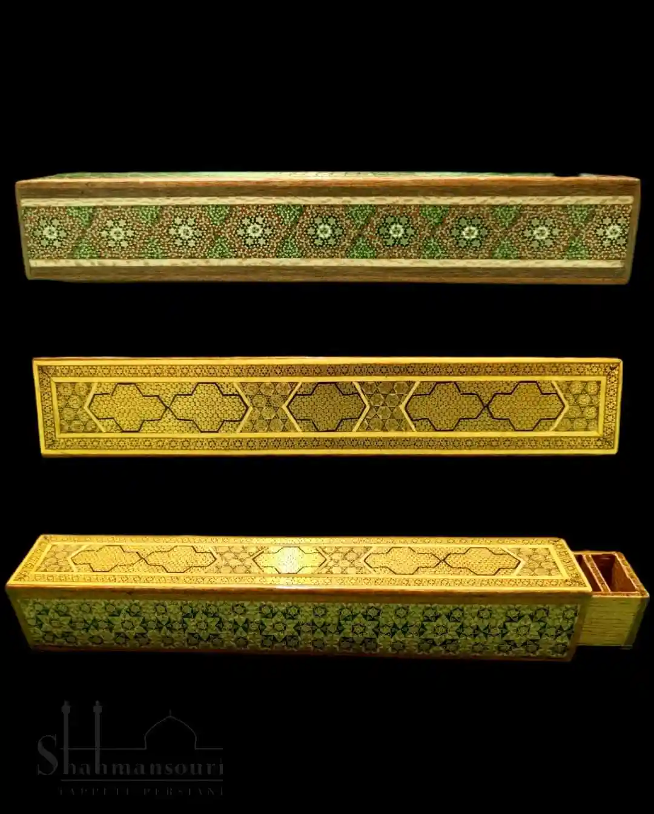

Persian handicrafts
Persian handicrafts are rich in colour, form and very old traditions. Alongside Persian rugs, Iranian culture also offers refined handmade objects: wood inlay, blown glass, ceramics, miniatures on paper and printed textiles. On this page you can explore some of the most representative forms of that tradition.
Khatam - inlay
Khatam consists of geometric patterns created through very thin inlays of wood, bone and metal. These minute compositions require mastery and patience: a single box can demand months of work.



Blown glass
The tradition of Persian blown glass goes back more than a thousand years. Harmonious forms and vivid colours catch the light and create unique reflections. Each piece is shaped by hand and carries the visible imprint of its maker.
Ceramics
Ceramics from Isfahan and other cities are decorated with polychrome glazes and floral motifs. Vases, plates and tiles tell stories of nature and Persian mythology. Glazing techniques give these surfaces a luminous finish that lasts over time.


Engraved metalwork
From the painstaking work of the engraver, with the help of a pitch-filled support, come vases, plates, trays and samovars in different metals, from bronze and copper to silver. Entirely shaped by hand, they are artistic masterpieces for their style, decorative inventiveness and minute detail, and in contemporary Western interiors they become especially distinctive.


Miniatures
Persian miniatures are small paintings on paper or parchment that depict poetic and epic scenes. Brilliant colours and careful detail make every work a small masterpiece, often accompanied by calligraphy.


Miniatures on bone
Miniatures on bone combine the precision of Persian painting with a rare and precious support. Cases, small decorative objects and polished surfaces are enriched with detailed scenes and refined motifs, becoming collector's pieces of great charm.


Papier-mache
Decorative objects of different forms and uses, such as pen holders, mirrors, jewellery boxes and dark papier-mache surfaces, are finely painted with miniatures and very delicate ornamental details.


Hand-printed textiles
Hand-printed textiles (Ghalamkar) are made with carved wooden blocks that are dipped in colour and then pressed onto the fabric. The result is a repeated design that feels harmonious and slightly irregular at the same time.
To see these pieces in person or receive advice on how to combine them with rugs, you can contact us or visit us in Verona.